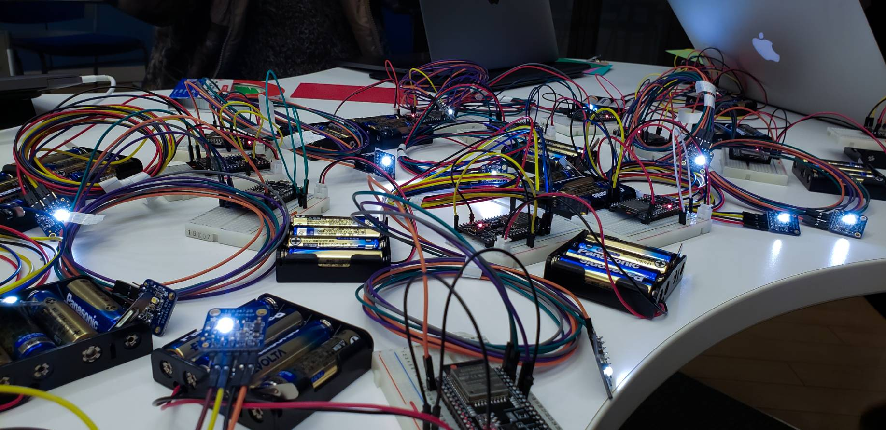

KeitoTakaishi
About
だんだんランタン
Tool : Unity, Blender, esp32, Node.js
Overview : マイコンと紐付いているランタンがカラーセンサによって読み取られた色に変化し，
”だんだん”周りのランタンにも伝搬していく作品。冬期でのカフェで展示する作品であったため，
暖かさ(”だん”)を意識して作成。通信，映像周りを担当。
NetWork&Movie : KeitoTakaishi
